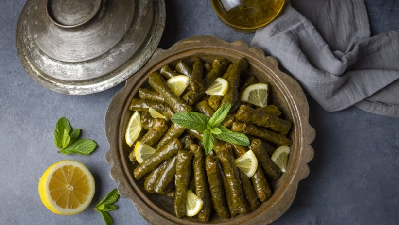

This page contains a recipe for Yaprak Sarma. To see our other recipes visit the Ottoman Cuisine
Or Click on the Home botton to go back to Welcome page.
Yaprak Sarma (Turkish Stuffed Grape Leaves)

Description
Dolma is a Turkish word that refers to all types of stuffed foods.
Vegetables and edible leaves are used as the container for the delicious filling, which can be anything from meat to grains or vegetables. And these stuffed foods are one of the tastiest Turkish dishes everyone should try.
This recipe is made with grape leaves stuffed with rice and is completely meatless.
It only contains rice, onions, tomatoes, a few spices and herbs, and of course, some grape leaves to stuff. It is called yaprak sarma in Turkish cuisine when it is meatless.
Ingredients
- Grape Leaves
- Choosing the Grape Leaves:
- You can use either fresh grape leaves or preserved ones.
- Rice
- Choosing the Rice:
- Any short-grain rice would work with this recipe. Make sure you wash the rice under running cold water to get rid of the starch.
- Pine Nuts
- choosing the Pine Nuts:
- They are great for adding some texture and nutty flavor to dishes. Omit them if you have nut allergies or you don't have them in hand.
- Onions
- Choosing the Onions:
- It adds great flavor to the rice stuffing. You can use finely diced brown, yellow, or white onion. Shallots would work great as well.
- Currants
- Choosing the Currants:
- They are small dried raisins and a popular ingredient in Mediterranean cuisine.
- Tomato Paste
- Choosing the Ingredients for Tomato Paste:
- It is the staple of Turkish cooking. It adds an umami flavor to the dishes as well as a bright red color. You can find it in Turkish or Middle Eastern shops.
- Spices
- Choosing the Spices:
- Cinnamon, paprika, and black pepper are my favorite spices to use for rice stuffing but you can add your favorite spices and adjust the amount to your taste.
Steps
How to Make Yaprak Sarma
- GRAPE LEAVES
- PREPARE THE GRAPE LEAVES
- If using fresh grape leaves, wash them thoroughly and blanch them in boiling hot water for a couple of minutes, until they are soft and easy to fold.
- Place them in a colander and let them cool down while you prepare the rice filling.
- RICE
- PREPARE THE RICE STUFFING
- Rinse the rice under cold running water and then let it drain on a colander.
- Place a pan on medium heat and add 3 tablespoon of olive oil.
- Place the chopped onions in the pan and sauté until soft and translucent.
- Add the pine nuts and sauté until they turn slightly brown.
- Add the washed rice and black currants and sauté the rice until they are totally dry.
- Stir in the tomato paste, salt, freshly ground black pepper, cinnamon, paprika, dried mint, sugar, 1 cup of water, and lemon juice, and cover the pan with a lid.
- Cook until the water evaporates, take the pan off the heat then add the parsley along with the dill.
- Stir the mixture and let it cool down for 10 minutes before stuffing the grape leaves.
- STUFF GRAPE LEAVES
- STUFF AND ROLL THE GRAPE LEAVES
- Start preparing your Dutch oven or pan by layering it with broken/unused grape leaves.
- You can also use sliced tomatoes or potatoes to avoid the stuffed grape leaves from touching the bottom of the pot from burning.
- Lay the leaf flat on a cutting board with the shiny side down.
- Place about 1 tablespoon of the rice filling in the center of the leaf, close to where the stem was.
- Fold the sides over the filling.
- And roll, keep tucking the sides as you roll.
- Roll them tightly enough but not too tight, leaving enough room for the rice to expand as they cook.
- Arrange the stuffed grape leaves in rows neatly in your prepared dutch oven or pan.
- Place them seam-side down and cover the bottom of the pan without leaving any space.
- Layer a few slices of lemons on top of the arranged stuffed dolmas.
- Dilute 1 teaspoon of tomato paste with 2 cups of water and add a tablespoon of olive oil.
- Pour it over dolmas, until it almost covers them.
- Bring it to a boil and gently simmer on low heat for an hour, or until the leaves are soft and the rice is fully cooked.
- Let the dolmas rest for 15 to 20 minutes before transferring them to a serving plate.
- DONE!
- DONE! YOU CAN SERVE THE FOOD!
- Congratulations you've done it! Now Relax and enjoy the salad!
IMPORTANT!
Rolling the Leaves can be a hard process for some people. If you are having trouble with it, you should see this Tutorial video.
To see our other recipes visit the Ottoman Kitchen